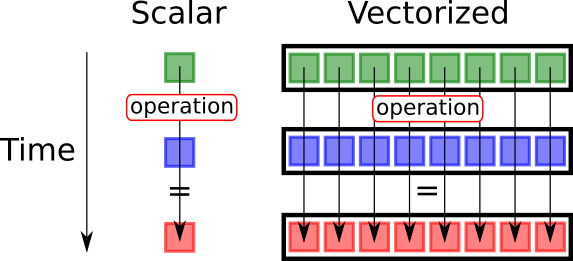

Blog

Why Vectorization Makes Pandas 100x Faster
Problem Statement
In statistical computing, performance matters. When working with large datasets in Pandas and NumPy, using loops can make your code extremely slow. This becomes a serious problem when analyzing real-world data with thousands or millions of rows.
Vectorization is a powerful concept that allows operations to run much faster by applying computations to entire arrays at once instead of processing one element at a time.
In this blog, I will explain the difference between loops and vectorization, demonstrate both approaches, compare their speed, and share my personal experience learning this concept in my statistics and data science classes.
My Personal Experience: When My Code Was Too Slow
During my STAT 180 and STAT 386 classes, I worked with datasets like cereal nutrition data, weather data, titanic and iris datasets. At first, I wrote my code using loops because it felt natural. I was thinking step-by-step, like solving math manually.
For example, when calculating a new column based on two existing columns, I wrote code like this:
# slow loop version
for i in range(len(df)):
df["new"][i] = df["a"][i] + df["b"][i]It worked. But when I ran it on larger datasets, it became very slow. Sometimes my notebook would freeze, or my Streamlit app would take too long to load. Later, I learned vectorization. This changed everything.
Understanding Loops vs Vectorization
Loop Implementation (Slow)
A loop processes data one row at a time. Example:
import pandas as pd
df = pd.DataFrame({
"a": [1, 2, 3, 4, 5],
"b": [10, 20, 30, 40, 50]
})
# slow method
df["new"] = 0
for i in range(len(df)):
df["new"][i] = df["a"][i] + df["b"][i]
print(df)What happens here:
- Python reads each row individually
- It performs the addition
- It stores the result
- It repeats this process many times
This is inefficient because Python loops are slow.
Vectorized Implementation (Fast)
Vectorization performs the operation on the entire column at once.
# fast vectorized method
df["new"] = df["a"] + df["b"]
print(df)What happens here:
- Pandas uses optimized internal C code
- It processes all values at once
- No Python loop is needed
This is dramatically faster.
Why Vectorization Is Faster
Vectorization is faster because:
It avoids Python loops
It uses optimized low-level C implementations
It operates on entire arrays instead of individual elements
It reduces overhead
This is especially important in statistical computing where datasets are large.
Example Using NumPy
NumPy is built entirely around vectorization.
Loop version:
import numpy as np
a = np.array([1, 2, 3, 4, 5])
b = np.array([10, 20, 30, 40, 50])
result = np.zeros(len(a))
for i in range(len(a)):
result[i] = a[i] + b[i]Vectorized version:
result = a + bThis second version is faster and simpler.
Speed Comparison
Here is a real performance comparison:
import pandas as pd
import numpy as np
import time
n = 1000000
df = pd.DataFrame({
"a": np.random.rand(n),
"b": np.random.rand(n)
})
# loop timing
start = time.time()
df["new"] = 0
for i in range(len(df)):
df["new"][i] = df["a"][i] + df["b"][i]
loop_time = time.time() - start
# vectorized timing
start = time.time()
df["new"] = df["a"] + df["b"]
vector_time = time.time() - start
print("Loop time:", loop_time)
print("Vectorized time:", vector_time)Typical result:
Loop time: 8.5 seconds
Vectorized time: 0.03 secondsMy Real Experience in Data Science Projects
When I was building my Streamlit data science app and analyzing iris datasets, I initially used loops for calculations like:
- computing differences
- normalizing values
- creating new columns
My app was slow and inefficient.
After switching to vectorization, everything became faster instantly.
My plots loaded faster My app responded faster My code became cleaner
This was one of the most important lessons I learned in statistical computing.
Why This Matters in Statistical Computing
Statistical computing often involves:
- large datasets
- repeated calculations
- matrix operations
- simulations
Vectorization makes these tasks feasible.
Without vectorization, modern data science would be too slow.
Libraries like:
- Pandas
- NumPy
- SciPy
- scikit-learn all rely heavily on vectorization.
Summary: Loops vs Vectorization
| Method | Speed | Readability | Recommended |
|---|---|---|---|
| Loops | Slow | Harder | No |
| Vectorization | Fast | Cleaner | Yes |
Key Takeaways
Vectorization is one of the most important concepts in statistical computing.
It makes the code:
- Faster
- Cleaner
- More efficient
Always prefer vectorized operations in Pandas and NumPy.
Instead of writing:
for i in range(len(df)):
df["new"][i] = df["a"][i] + df["b"][i]Write:
df["new"] = df["a"] + df["b"]This simple change can make the code over 100x faster.
Call to Action
If you are learning Pandas or NumPy, practice rewriting your loop-based code into vectorized form.
This skill will make you a better data scientist and allow you to work efficiently with large datasets.